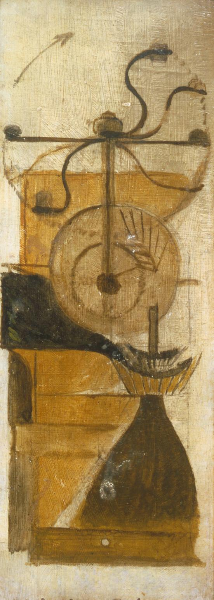
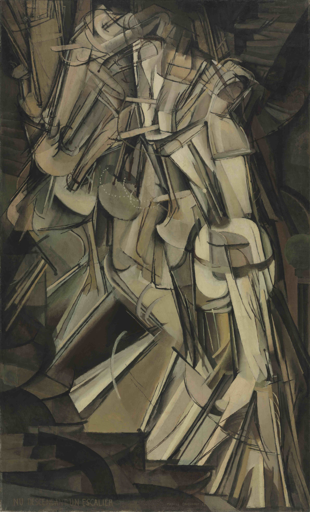
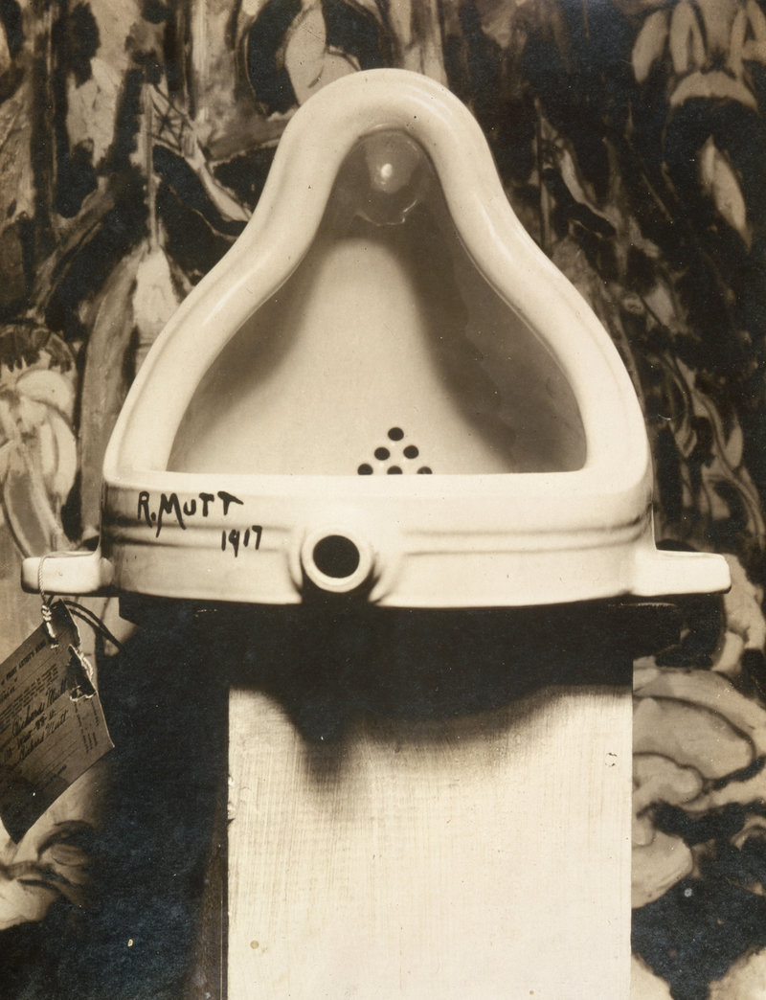

马塞尔·杜尚 Marcel Duchamp – 咖啡磨豆机 Coffee Mill
文章目录
 Marcel Duchamp, Moulin à café, 1911, Oil Paint, 33 x 12.7 cm
《Coffee Mill》是杜尚在1911年送给他哥哥的礼物。 雕塑家Raymond Duchamp想装饰厨房，向周围的艺术家朋友们讨要作品，身为弟弟的Marcel画了这幅老式的咖啡磨豆机相送。
多年后杜尚回忆说，这幅作品是他思索艺术风格的“毛线头”。 画中展示了研磨咖啡的几个不同装置[1]：
- 摇柄（the handle on top）：虽然本身只有一个摇柄，但画出在摇起来后的不同位置
- 中间轴的齿轮（the cogwheels of the central shaft）：最简单的几根线条，表现齿轮在顺时针转动
- 接粉仓：褐色的三角堆，咖啡粉似乎要溢出画面
从这幅1911年的作品中已经能感知出杜尚希望打破平面的思想： 他试图用曲线解构磨豆机，用多个摇柄表达运动感，用平行线集表达齿轮的方向性。
杜尚很努力在二维平面上用静止线条制造三维空间的动态画面，尽管此时他的手法略显单薄，形式大于内容。但他继续丰富线条形式和画面深度，终于在第二年交出了漂亮的作品。
1912年纽约的军械库展览上，作品《Nude Descending a Staircase》因独特的立体主义风格被广泛的关注，杜尚一夜成名！
 Marcel Duchamp, Nude Descending a Staircase, 1912, Oil on Canvas, 57 x 35cm, Philadelphia Museum of Art
 Marcel Duchamp, 1917, Fountain, photograph by Alfred Stieglitz
参考： [1] https://www.tate.org.uk/art/artworks/duchamp-coffee-mill-t03253 [2] https://en.wikipedia.org/wiki/Fountain_(Duchamp)